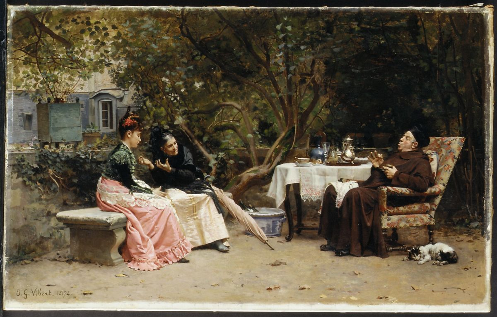
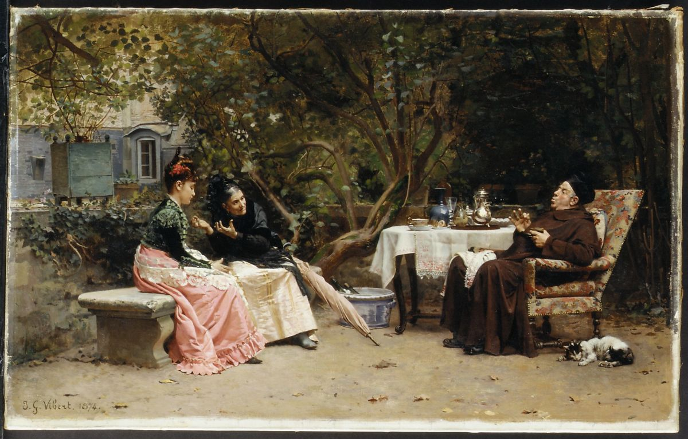

A Great Story doesnt happen by accident
While every piece within the MET Museum has an impoertant part in art and history, linking one of the 62,856 pieces together because they both contain men really ins't that interesting.
This is just one example of many decisions of what to include (or exclude) in the story above.
How does it work?
First we have to decide what would make an interesting link. We chose:
- Artist year of birth
- Artist year of death
- The year the piece was created (sometimes this is an approximation)
- The artist
- Artist place of birth
- The contents (tags) of the artwork (i.e. does it contain dogs?)
- The medium of the artwork (what is itr made of?)
- Where the art was made
- Where the art was excavated
Then we Linked it all together.
What did we ignore?
Within these categories we chose to ignore some possible links.
- Any medium that had been used more than 50 times
- Any tag that was used more than 1000 times
Art data isnt perfect
Sometimes there are errors on more commonly, information is missing or unknown about a piece. We therefore also excluded any of the following:
- Artwork with a blank title
- Artwork by an unknown artist
- Fragments of items
Telling the Story
After everything is linked we now need to follow a path from one item to another.
 

Decisions, Decisions
Most artworks will be linked to more than one other artwork, so which one to choose?
We could pick a link randomly, but in reality some links are more interesting than others. The other issue with randomly selecting the link is that most links are realted to dates, which can be interesting but we dont want the whole story to be about dates. We created a ranking system by giving each link a score, with some element of randomness to pick the more interestings links where possible.
- Start at 0
- Pick a random score between 1 and 5 as a starting point
- Add 10 if there is a link to something that was excavated (these are pretty rare to find so they make an interesting story)
- Add 7 if its links to the same city (knowing the country is quite common, but knowing the city is much less common)
- Add 5 if the artists nationality (where they were born) is known.
- Add 2 if there link is a tag. As we originally only included tags that were used less than 50 times, these can be very unique and interesting.
Zero Score. We want to avoid (where we can) making similar links within the story, so if the same item has been used before, or it was the same kind of link (for expample from place of birth to place of birth), we give it a zero score.